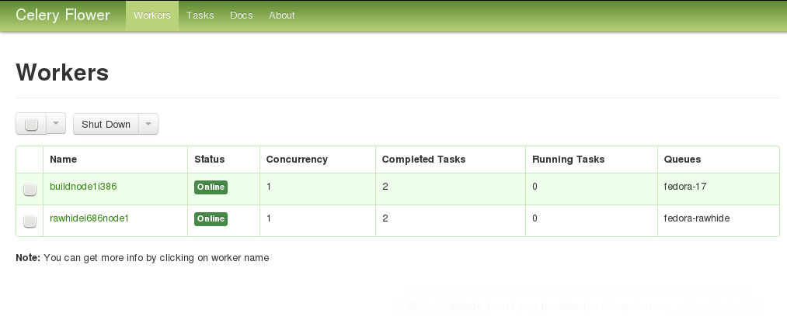

This document aims to get you started with using and deploying the On-Demand Fedora Build Service, an effort to make Fedora image building easier. Using this service you can make boot iso, DVD iso and live images of Fedora Linux.
The service can be used in two modes:
In local mode, all the work is done on the local machine, whereas in distributed mode, the build job is distributed across multiple build nodes and building images for multiple Fedora releases and architecture is supported.
The local mode involves minimum setup requirements and is easy to get started with. If you intend to deploy the service across multiple nodes, the local mode is a good way to smoke test the working of the service. Let’s get staretd:
To setup everything you need for running the image building service in local mode, excute $ fab deploy_local, which should ask for your sudo password as it installs the packages needed for running the image building service, installs the package, image_builder and another setup requirement.
Now you are ready to using the image building service. Navigate to the cli/ directory in the source tree. The file `build_cli_basic.py` is a command line client to build a Fedora image as per your specifications. Here is a quick overview of how to specify a boot iso:
[DEFAULT]
type=boot
arch=x86_64
release=17
staging=10.0.0.27
#staging=file:///tmp/staging
email=amitsaha.in@gmail.com
[boot]
product=fedora
release=17
version=1
updates=0
updates-testing=0
17_url=http://download.fedoraproject.org/releases/17/Everything/x86_64/os
17_mirror=http://mirrors.fedoraproject.org/metalink?repo=fedora-17&arch=x86_64
#17-updates_url=http://download.fedoraproject.org/updates/17/i386
#17-updates_mirror=https://mirrors.fedoraproject.org/metalink?repo=updates-released-f17&arch=i386
proxy=
nvr=package1;packag2;
bid=package3;packag4
outdir=/tmp/lorax_op
workdir=/tmp/lorax_work
The [DEFAULT] section of the configuration contains the following information:
The [boot] section specifies the options which are specific to lorax, Fedora’s image creation tool. The product option specifies the name of the Boot ISO being created, usually fedora. The release option is the same as above. The version name specifies the version of the ISO being built.
The next few options describe the repository and mirrorlists. The updates and updates-testing repository can be enabled/disabled by setting them to 1 or 0, respectively. The release repository and mirror is specified via the options {release}_url and {release}_mirror (where release is the above specified value). If you have enabled any or both of updates or updates-testing, you have to specify the repository and mirror list for them as well. Incase you have a proxy setup for your repositories, specify it here (untested).
Incase you want to include packages which are not yet there in any of the repositories, you may specify them via their NVR strings or Koji build IDs using the next two options: nvr and bid. If you don’t have any such requirements, just leave them blank. The packages will be pulled in from Koji and included in your image.
Finally, lorax requires an output directory where it places the image it builds. You can specify it using outdir. The workdir option is used to specify a directory which will be used by the image building code to download the extra packages and create a side repository (if any).
Now, you may save the above specification in a file called, boot_imagebuild.conf. Next, execute the build_cli_basic.py script using $sudo python build_cli_basic.py /location/for/boot_imagebuild.conf, which should trigger the build process:
Initiating Build Process. See /tmp/imagebuild_13446647457.log for progress
checking for root privileges
checking yum base object
setting up build architecture
setting up build parameters
installing runtime packages
..
If you check the specified log file, you should see messages like:
2012-08-11 16:07:58,798 - Registered a new Image Build request from amitsaha.in@gmail.com
2012-08-11 16:07:58,798 - Image type:: boot
2012-08-11 16:07:58,800 - Starting the Image Build Process
2012-08-11 16:07:58,800 - Creating side repository
2012-08-11 16:07:58,803 - Downloading packages for Side repository
2012-08-11 16:08:17,350 - Side repository created
2012-08-11 16:08:17,353 - All set. Spawning boot iso creation using lorax.
2012-08-11 16:28:39,101 - Boot ISO built succesfully
2012-08-11 16:28:39,118 - Image building process complete
2012-08-11 16:28:39,118 - Image successfully created. Transferring to staging.
2012-08-11 16:28:39,118 - Initiating local transfer of image(s) to /tmp/staging
2012-08-11 16:28:43,238 - Initiating local transfer of logs to /tmp/staging
2012-08-11 16:28:43,895 - Image(s) and logs available at file:///tmp/staging
The boot_imagebuild.conf file that was used had the following contents:
[DEFAULT]
type=boot
arch=x86_64
release=17
#staging=10.0.0.27
staging=file:///tmp/staging
email=amitsaha.in@gmail.com
[boot]
product=fedora
release=17
version=17
updates=0
updates-testing=0
17_url=http://download.fedoraproject.org/releases/17/Everything/x86_64/os
17_mirror=http://mirrors.fedoraproject.org/metalink?repo=fedora-17&arch=x86_64
#17-updates_url=http://download.fedoraproject.org/updates/17/i386
#17-updates_mirror=https://mirrors.fedoraproject.org/metalink?repo=updates-released-f17&arch=i386
proxy=
nvr=wget-1.13.4-4.fc17
bid=
outdir=/tmp/lorax_op
workdir=/tmp/lorax_work
If you compare the logging messages and the image build specification, you will see that I have specified an extra package to be pulled in from Koji using a NVR string and hence the messages regarding side-repository creation.
Similarly, you can also build DVD and Live images using this command line client and the appropriate specifications. For sample specification for these, see the conf/ directory in the checked out sources.
It should be kept in mind that all the options must be specified in the configuration files as in the samples given. It is therefore recommended that you use one of the sample configuration files to build your own. A simple configuration file generator will soon be made available.
The distributed mode enables deployment of the code on multiple nodes and dare we say, in production. The advantages of this mode include support for building images for different Fedora releases and architecture. Also, your local machine will not be hogged with building images. Let’s see how we can deploy the build service in this mode.
First, the deployment configuration is specified via the file conf/deploy.conf:
[broker]
i686="amqp://guest@10.0.0.30//"
x86_64="amqp://guest@10.0.0.27//"
[releases]
releases=17,rawhide
[master]
host=gene@localhost
workdir=/tmp/imagebuilder_webapp
[workers-17]
i686=root@10.0.0.30
x86_64=root@10.0.0.27
workdir=/tmp/imagebuilder_worker
[workers-rawhide]
i686=root@10.0.0.37
x86_64=root@10.0.0.43
workdir=/tmp/imagebuilder_worker
[SMTP]
#replace these with appropriate credentials
#single quotes needed
server='smtp.gmail.com'
port='587'
login='bot@gmail.com'
password='f00bar'
Let us understand this configuration file’s sections and options.
Next, the build node configurations are specified. Depending on the number of supported releases, there will be one or more sections - one for each supported release, with section names of the form worker-{release}, where release is one of the values specified in releases above.
Once this configuration file is ready, the fabric script fabfile.py will be used to deploy the service. Let us see the tasks that are currently available in the script (assuming you are in the source root):
$ fab --list
This is a fabfile (http://docs.fabfile.org/en/1.4.2/index.html)
to deploy On-Demand Fedora Build Service.
See doc/ for usage guidelines.
Available commands:
copy_files_webapp Copy files to the web application host
copy_files_workers Copy the files to the workers
deploy_local Deployment in local mode
deploy_webapp Deploy the web application (and enable REST API)
deploy_workers Deploy the workers
install_packages_webapp Install dependencies for the web application
install_packages_workers Install dependencies on the workers
setup_cli Deployment for using the command line client in distributed mode
First, let us deploy the workers. We shall first copy the appropriate files to the worker, install the necessary packages and then finally start the worker processes (root access to all the workers is required). We run the corresponding taks via fabric:
$ fab copy_files_workers install_packages_workers deploy_workers
[root@10.0.0.37] Executing task 'copy_files_workers'
[root@10.0.0.37] run: rm -rf /tmp/imagebuilder_worker
[root@10.0.0.37] Login password for 'root':
..
..
It will take a while before all the taks are completed and provided there are no errors, your workers should now be up and ready to build. Assuming that the above deployment completed without any errors, you can do a simple check to verify whether the workers are up and running using flower (a web-based tool for monitoring celery workers.). In your browser, open the URL http://<ip>:8008, where <ip> can be any of the worker node IPs. If the IP address you chose is one of the i686 nodes’ IPs, then you should see a webpage showing all the i686 nodes you specified. For example, the following screenshot shows a sample flower interface:
If you do not see all of the nodes you specified for the specified architecture, something is wrong, and should be investigated.
Now that the workers are deployed, let us now explore the options currently available for submitting an image build task.
TBD
TBD
{kind=link}